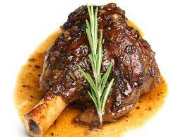

THE MOST AMAZING LAMB SHANKS

An amazing shank of the lamb, best servered with some for of mash'
Roasted lamb shank
The most scrumdiddlyumptious shank of the lamb and how to prepare it for much yum
Ingredients:
Steps
- Place lamb shank in oven tray
- Set over to bake at at 220 degrees celcius
- Bake lamb shank for 50 minutes until golden brown